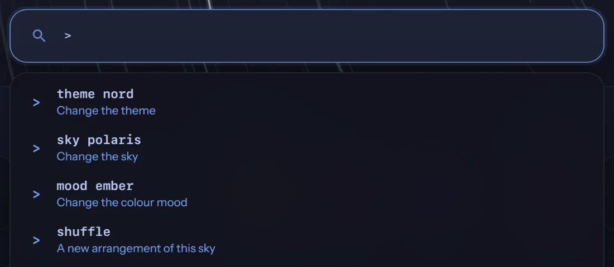
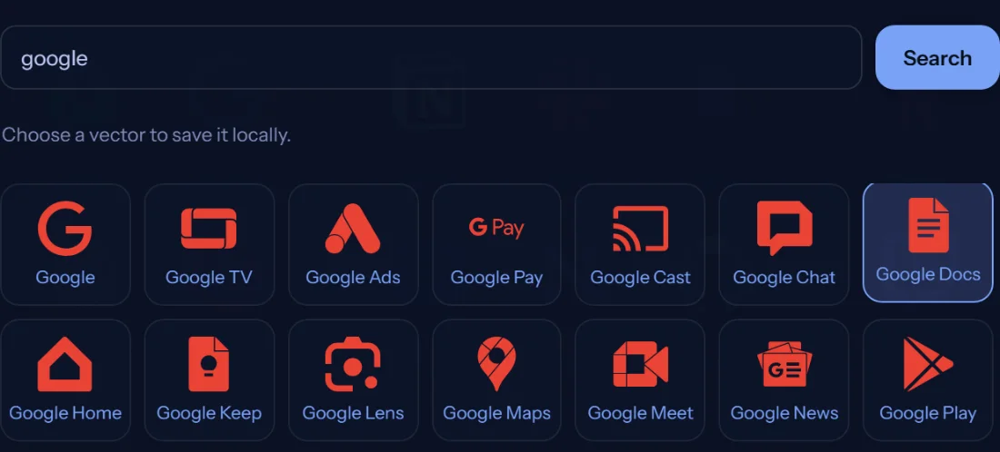

Folders you can drag around
Drag a folder anywhere and it shows where it will land. Fitted mode lines rows up edge to edge, and tile size, spacing and width sit in one panel with Undo.

Free · Open source · No account
Your bookmarks, a sky that moves, and when you want it, a dashboard for the day. What you see below is the real extension, running on this page. Click around.

Everything you change stays in this browser tab. Close it and the demo starts fresh.
What's in it
Drag a folder anywhere and it shows where it will land. Fitted mode lines rows up edge to edge, and tile size, spacing and width sit in one panel with Undo.
It uses the engine you picked in Chrome, does math, and takes commands after >.

Type a brand, pick a clean icon, and it's saved on your machine.

Work and Home as two whole setups. Sync goes through Chrome's own sync, so there's no account of ours.
Settings and bookmarks stay in Chrome's storage. It only goes online when you search for an icon or paste an image link.
Each one recolours the sky too. Text stays readable on every background, your own wallpaper included.

Dashboard
Turn it on for a profile and cards for your day sit above the folders. Drag them anywhere, stretch them by the corner, start from a layout. Turn it off and it is the quiet new tab again.


The whole page for one thing. A timer in a ring, Pomodoro or counting up, rain or ocean made in the browser, your tasks at the side and how long you have focused today. It keeps the time in a small window over other tabs too.
Try it above↑Free, really
Nordlys only ever charges for things that cost money to run. Everything that runs on your own machine is free, and that is almost everything.
Momentum as it describes itself on its Chrome Web Store page, and as its settings mark Plus features, September 2026.
Backgrounds
They're capped at 30 frames a second, so they stay light, and they can follow the time of day where you are. Pick one to put it on the demo above.
Tour
Questions
Install
Free, and it works in Chrome, Edge, Brave and other Chromium browsers.
From source: unzip it, open chrome://extensions, turn on Developer mode, then Load unpacked and pick the folder.